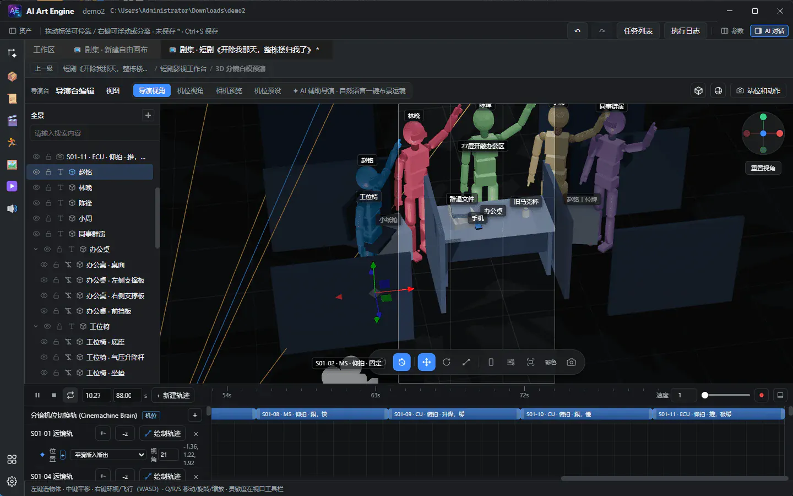
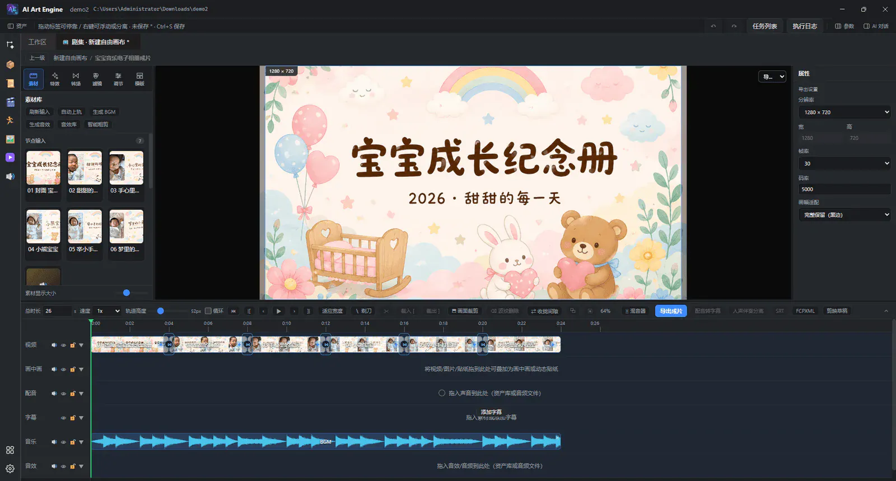
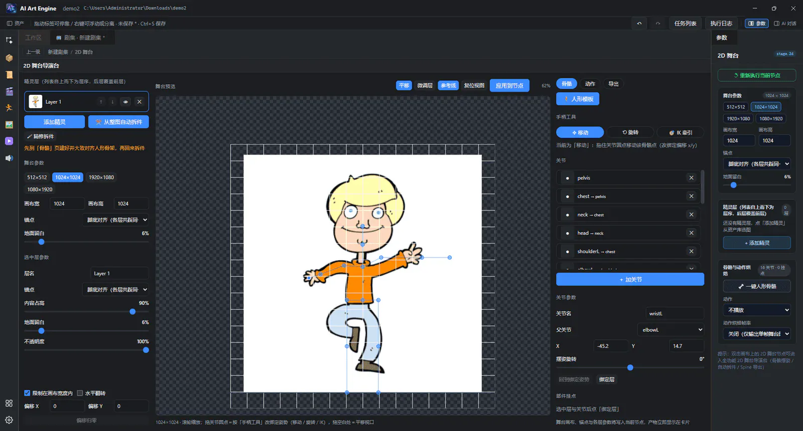
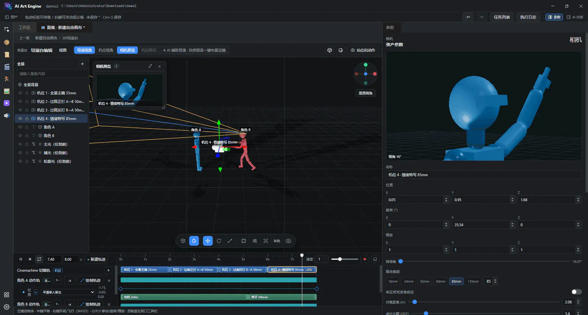

Manual · Production · v9.0.0
Comic drama, NLE timeline & director stage
Run 21-genre 5-stage AI Comic Drama & Short-Drama episodes in the Film Workbench; finish in the 6-tab CapCut-grade NLE timeline (120+ effects, DOTween dual-layer keyframes, TD-PSOLA singing synthesis & JianyingPro/CapCut draft export); rig sprites with AI bone alignment & Spine 2D export; retouch portraits with 4-band wavelets; and block 56-bone 3D scenes with World Labs 3DGS.
9. Script & 5-stage Film Workbench
9.1 Script assets
Generate and edit scripts through the node graph or serialized novel chains, then connect the output to “Script output” or pipe it directly into the “Film Workbench” (film.workbench). Script assets can be dragged onto any workspace canvas as upstream sources.
9.2 Film Workbench: 21 genres (P01–P21) × 5-stage AI Comic Drama & Short-Drama pipeline

film.workbench): 21 genre presets (P01–P21), 5-stage loop, #variant anchors, cross-episode TTS voice bindings & full-episode .mp4 export.-
Film Workbench (
film.workbench) unifies serialized short-drama and AI comic-drama production inside one node and full-screen Dive studio across 21 genre presets (P01–P21) and a complete 5-stage closed loop:- Stage 1 · A+B Beat Breakdown (
breakdown): includes 21 genre pacing packs (P01–P21: female-lead comeback, war-god, suspense twist, xianxia cultivation, palace intrigue, cyberpunk, post-apocalyptic, etc.), splitting scripts by “A narrative hook + B visual payoff” into shot framing, camera angle, movement, per-shot duration (Auto / 4s / 8s / 10s / 15swith time-sliced0-1s/1-4smotion beats), dialogue, and character/location/prop entity tables — with per-shot locking and one-click “3D Director Previs”. - Stage 2 · 11-Point Continuity & Dialogue Audit (
review): AI director audits every shot against an 11-point continuity checklist (180° axis, eyeline match, shot-scale progression, wardrobe/prop continuity, emotional arc, etc.) and enforces a hard ≥67% dialogue coverage gate, automatically rewriting and re-auditing failed shots up tofilmReviewMaxRoundswhile skipping locked shots. - Stage 3 ·
#variantAnchors,STYLE01& Cross-Episode TTS Voice Binding (cast): batch-generates turnaround sheets,#variantwardrobe/damage/age states per character (e.g.CHAR01#battle,CHAR01#casual), location plates, key props, global visual bible cardSTYLE01, and cross-episode persistent TTS voice bindings with fingerprint caching. - Stage 4 ·
@1–@4Locked Batch Shoot & Vision QC (render): binds appearing cast variants, locations, props andSTYLE01as locked@1–@4visual anchors per shot, runs Vision QC auto-reshoots on defective keyframes, and renders image-to-video clips with lip-sync alignment (supporting “Keyframes only” approval before incremental video shooting). - Stage 5 · Cover/Title Release Pack & Full-Episode
.mp4(release): generates vertical/horizontal promotional covers, high-CTR hook titles and social tags, and muxes voice-over, subtitles and transitions into a ready-to-publish full-episode.mp4(or feedsoutput.timelinefor NLE finishing).
- Stage 1 · A+B Beat Breakdown (
-
3D Storyboard Previs & Script Camera Tracks: click “3D Director Previs” (or per-shot “3D Previs”) to populate a 3D blockout stage with the script's characters, props and sets, complete with a Cinemachine Brain multi-shot camera switcher track, spline camera paths, and offscreen
.webmmotion trajectory recording. -
Single-shot polish (
film.shot): wire the workbench'soutandout-castinto a downstream “Shot” node and pick a shot viafilmShotRef(e.g.1orS01-02) to route its keyframe prompt (out),@1–@4reference sheets (out-refs) and motion prompt (out-motion) into dedicated Image Generation → 10-in-1image.process→ Video Generation chains. -
Paired with the Skill Marketplace “Film Full Pipeline” (
short-drama) and “Film Polish · Single Shot” (short-drama9) workflow bundles, you get both multi-episode batch throughput and surgical shot-level polish (see the Short-Drama Guide).

9.3 Storyboard thinking and prompt presets
Storyboarding is unified across the 5-stage Film Workbench and generation-node prompt presets: Stage 1 breaks down A+B beats, Stage 2 enforces 11-point continuity, Stage 3 locks #variant & STYLE01 anchors, and Stage 4 assembles render-ready camera prompts with @1–@4 bindings.
- Camera language: hero / mysterious entrance, two-shot medium, over-the-shoulder reverse, high angle, from behind, Dutch angle, and more.
- Body orientation: full front, 45° front, pure profile, 45° back and strict back.
- Acting: anger, dissociation, mania, relief, anxiety, sadness, confidence and surprise broken down into facial, breathing, shoulder / neck, finger and weight-shift movement.
- Lighting: top light, frontal side light, Rembrandt, volumetric, backlight and motivated light sources inside the frame.
- Ad camera moves and transitions: impact hard cut, flash to white, motion match, short dissolve, match cut, foreground occlusion, rack-focus reveal, jump cut and product hero reveal.
Video and image generation nodes can inject these presets straight into prompts; to replicate an existing viral clip 1:1, use the 2-node semantic.analyze → semantic.rebuild pipeline in the Viral Video Remake section.
10. CapCut-grade NLE timeline (output.timeline)

output.timeline): 6-tab creative suite (Media / Effects / Transitions / Filters / Adjust / Templates), 120+ GPU/FFmpeg effects, DOTween dual-layer keyframes, TD-PSOLA singing synthesis & JianyingPro/CapCut draft export.
output.timeline is a built-in 6-tab CapCut-grade non-linear editor (NLE) that brings Film Workbench episodes, upstream video/audio node outputs, and local media onto a unified multi-track timeline for VFX finishing, color grading, keyframe animation, singing synthesis, and editable NLE draft export.
10.1 Six-tab creative suite & multi-track layout
- 6-tab left creative panel: ① Media · ② Effects · ③ Transitions · ④ Filters · ⑤ Adjust · ⑥ Templates, paired with a real-time composite monitor, right-hand Inspector / keyframe curve panel, and multi-track timeline.
- Track types: main video · picture-in-picture (PiP) · effect / adjustment layers · voice-over · subtitles · music · SFX.
- The Media header supports refreshing upstream inputs, 1-click auto-place on tracks, and thumbnail sizing.
10.2 Media bin & organization
- Node inputs: automatically collects shot videos, dialogue, BGM and SFX from upstream nodes (removing a timeline clip never deletes the upstream source entry).
- Imported media & folders: drag files in from the workspace asset library or OS file manager; right-click in the import bin to create, rename, or reorganize persistent media groups.
10.3 120+ GPU/FFmpeg effects, LUTs/color wheels/curves & DOTween dual-layer keyframes
- 120+ GPU / FFmpeg effects & transitions: the Effects and Transitions tabs pack 120+ real-time GPU shader and FFmpeg composite effects (glow, RGB glitch, film halation & grain, motion blur, camera shake, light leaks, dissolve, flash white, slide/wipe, iris open/close, and more) applicable per clip or as spanning adjustment tracks.
- 3D LUTs, 3-way color wheels & RGB curves: the Filters and Adjust tabs provide cinema 3D LUTs, lift/gamma/gain color wheels, RGB & luma curves, temperature/tint, HSL, contrast, vignette, and sharpening.
-
DOTween dual-layer keyframe animation: animate both clip-layer properties (position X/Y, scale, rotation, opacity, audio volume) and effect / grading parameters with full DOTween easing curves (
OutCubic,InOutSine,OutBack,OutElastic, etc.) for punchy beat-synced zooms and smooth pans. - TD-PSOLA singing synthesis & audio tools: audio tracks include built-in TD-PSOLA (Time-Domain Pitch-Synchronous Overlap-Add) singing synthesis to sculpt spoken TTS or dry vocals onto target melody pitches and beats, alongside fade in/out, pitch-preserving speed ramps, and direct SFX generation.
10.4 Editing, PiP & subtitles
- Timeline editing: playhead split, copy/paste, magnetic snapping, independent undo/redo, track mute/lock/collapse, and resizable track heights.
- Picture-in-picture (PiP): position, scale, rotate and blend overlay clips interactively in the monitor with aspect-ratio preview modes.
- Subtitles & SRT: style font size, vertical placement, outlines and templates in the Inspector (or scale with the mouse wheel), burned into video exports or exported standalone as
.srt.
10.5 Export MP4/WebM & JianyingPro / CapCut multi-track editable drafts
The timeline toolbar offers two production delivery paths:
- Direct film render (MP4 / WebM): configure resolution (9:16 vertical, 16:9 widescreen, 4K, or custom), FPS and bitrate to mux all video tracks, 120+ effects, LUT grades, DOTween keyframes, subtitles and audio via local FFmpeg (with WebM fallback).
-
JianyingPro / CapCut editable multi-track draft export (
🎬 Export CapCut Draft): converts every video, PiP, voice-over, music, SFX and subtitle track into microsecond timelines, copies referenced local media intomaterials/, and writes a ready-to-open JianyingPro / CapCut project folder (draft_content.json+draft_meta_info.json) so editors can keep tweaking every cut and subtitle track natively.
11. Free canvas, #variant anchors, 2D Stage & Portrait Retouch
11.1 Free canvas & aiae:graph PNG-as-Workflow
-
Free canvas: an open node canvas — right-click or press Space to add nodes, or drag assets from the library. Dragging any exported PNG or official recipe card (such as
assets/recipe/recipe1.pngwith an embeddedaiae:graphchunk) onto the canvas restores the full node graph automatically. See Free canvas: video generation & reference video.
11.2 Cast & scene anchors with #variant wardrobe lock
-
Inside Stage 3 of the Film Workbench (
film.workbench), maintain multiple wardrobe, battle-damage or age variants per character (e.g.CHAR01#stealth-suit,CHAR01#casual) alongside global style cardSTYLE01and cross-episode TTS voice bindings so every shot locks the exact outfit and voice.
11.3 2D Stage (stage.2d): AI bone alignment & Spine 2D export
-
Double-click a 2D Stage (
stage.2d) node to open the 2D rigging & animation workbench:- AI bone alignment (Alpha morphology + YOLOv8-Pose): accepts either a full character sprite or inpainted part layers from “Layer Split (
rig2dmode)” and fuses local YOLOv8-Pose keypoint detection with Alpha connected-component morphology to snap parent-child joint pivots accurately onto anatomical rotation centers. - IK / FK animation & presets: animate with 2-bone IK handles, FK rotation keyframes, and procedural idle / breath / walk / run / attack presets, rendering transparent sprite sheets or motion clips.
- Spine 2D package export: one-click export a standard Spine 2D bundle (
skeleton.json+.atlas+ part PNGs) ready to drop straight into Unity, Godot 4, or Cocos.
- AI bone alignment (Alpha morphology + YOLOv8-Pose): accepts either a full character sprite or inpainted part layers from “Layer Split (

stage.2d): Alpha morphology + YOLOv8-Pose AI bone alignment, IK drag & Spine 2D (skeleton.json + .atlas) export.11.4 Portrait Retouch Workbench (image.portrait): 4-band wavelet skin & 7 camera/film color sciences
-
Double-click a Portrait retouch (
image.portrait) node to open the 16-group Dive retouching studio:- 4-band wavelet frequency-separation skin retouching: decomposes skin into four spatial frequency bands (ultra-fine pore micro-texture, mid-high blemishes & fine lines, mid-low tonal transitions, and base complexion) to remove blemishes and blotchiness while preserving real skin pores without plastic blur.
- 7 camera & film color sciences: ships with ARRI Alexa, Kodak Portra, Fujifilm, Hasselblad Natural Color, Leica, Sony Venice, and RED IPP2 color-science profiles alongside facial sculpting, catchlights, 7 makeup looks, feathered local-mask compositing, and 10 ID-photo print layouts.
12. 3D Director Stage (director.stage)

director.stage): 56-bone humanoid rigs, 24 procedural motions, 38 pose presets, offscreen .webm white-box trajectory video (@2), and World Labs 3DGS / GLB scenes.
director.stage is the real-time 3D blocking, cinematography and motion-control stage. It exposes two square list outputs — out-shots (blocking screenshots, images) and out-actions (offscreen .webm trajectory white-box videos, videos, designed to feed downstream video models as a locked @2 motion reference) — plus a 3D model input port, a panorama background input port, and the 9-tool Blender /mcp/blender live bridge.
12.1 56-bone humanoid rigs, 24 procedural motions & 38 pose presets
- 56-bone humanoid rigs: ships with articulated 56-bone humanoid mannequins (full spine, neck/head, clavicles, limbs, and 3-joint five-finger hands — plus external Mixamo / Tripo rigged GLB characters), supporting per-axis FK rotation, limb IK dragging, and natural-language AI posing.
- 24 procedural motions: includes 24 built-in procedural skeletal motions out of the box (walk, run, sneak, sword slash, parry/hit, spellcast, jump/land, dialogue gestures, idle breathing, etc.) with adjustable speed and blending — no external mocap files required.
- 38 pose presets: apply 38 curated cinematic & combat pose presets (heroic landing, standoff, guard stance, aim, seated contemplation, etc.) in one click to block multi-character drama fast.
12.2 Viewport controls, hierarchy & AI blockout
- Left-click selects · middle-drag pans · hold right-click for fly-through (W/A/S/D move, Q/E down/up, Shift sprint); Q / R / S switch move / rotate / scale gizmos.
-
Bottom toolbar switches panorama / animation mode, locks frame aspect ratio (
Autoor21:9 / 16:9 / 4:3 / 1:1 / 3:4 / 9:16), toggles bounds, and captures blocking shots intoout-shots. - Left hierarchy includes 20+ primitives, multi-camera groups, multi-select reparenting, material texture overrides, and AI scene blockout from 1–3 perspective or 360° panorama references; the top-right menus toggle Shaded / Wireframe / Shaded Wireframe and Gizmo overlay visibility.
12.3 Cinemachine camera tracks & offscreen .webm trajectory white-box video (@2)
- Keyframes & Cinemachine switcher: press K to keyframe, Delete to remove, and Space to play/pause across character motion tracks, spline camera paths, FOV/DOF lenses, and the Cinemachine Brain multi-camera switcher track.
-
Offscreen
.webmtrajectory white-box video (@2): clicking Record renders the animation through a clean offscreen WebGL pipeline (stripping UI chrome and helper gizmos) intoCache/Videos/and exposes it onout-actions— wire your character sheet as@1and this offscreen.webmwhite-box clip as@2into a downstream video generation node to lock exact camera trajectories and choreography.
12.4 World Labs 3DGS (.spz / .ply) → .glb spatial world workflow
3D worlds generated by asset.spatialWorld (World Labs Marble) and spatialWorld.export drop straight onto the 3D Director Stage:
-
World Labs 3DGS →
.glbpipeline: generate an explorable 3D world from text, 1–4 images, or video onasset.spatialWorld(saving native ~2M-splat*.spzGaussian splats, collider mesh, and*.pano.png), then pass it throughspatialWorld.exportto produce a strictly typed HQ textured / vertex-color.glbmesh (~600k–1M faces) or synchronous*.plysplats. -
Bundled Spark 3DGS renderer: drag or wire
.glbmeshes and.spz/.plysplats onto the stage — the built-in Spark renderer composites millions of Gaussian splats alongside 56-bone humanoid rigs in real time for both blocking screenshots (out-shots) and offscreen.webmmotion videos (out-actions). -
Splat boundaries: Gaussian splats support full 3D transforms, parenting, hue tinting, and camera capture, while skeletal rigging, texture-slot overrides, and wireframe shading apply to triangle
.glbmeshes (usespatialWorld.export→.glbplus the/mcp/blenderbridge when mesh editing is needed).